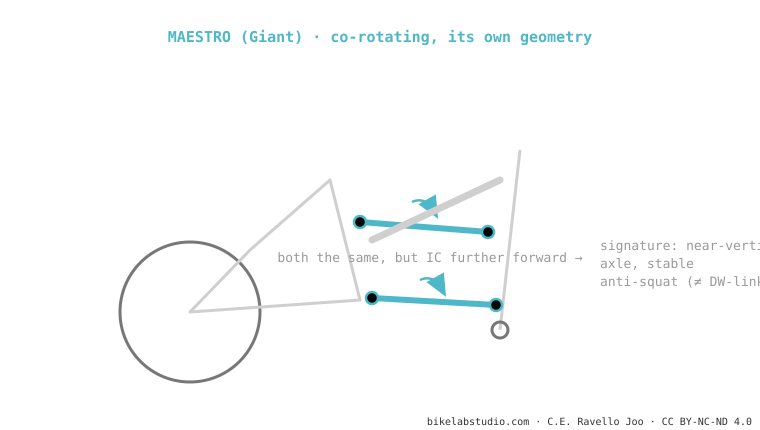

Giant's Maestro uses two co-rotating links (rotating in the same direction), like the DW-link — but with its own geometry: pivots in other positions, which changes its anti-rise and its response. It gives a near-vertical axle path and a stable anti-squat. The whole Giant range uses it (Trance, Reign, Anthem). It is one of the dual-link systems.
"It's a Giant DW-link" — you'll hear it a lot. It's a half-truth: same family (co-rotating), but the geometry is its own, and that shows.

It's alike to the DW-link in the essentials: two links rotating in the same direction, a controlled instant centre, anti-squat that doesn't collapse. It differs in where Giant places those pivots: the instant centre sits further forward, giving a different anti-rise and a very vertical axle path (little horizontal migration). The resemblance was such that there were historic patent disputes between Giant and Dave Weagle.
Same family (co-rotating), but with its own geometry: different instant centre → different anti-rise and response. Cousins, not twins.
The Giant range: Trance, Reign, Anthem, in XC, trail and enduro.
Tell us the model and we'll tell you its Maestro curve and the setup that makes the most of it. Message us on WhatsApp
© 2026 BikeLab Studio. All rights reserved. You may cite, link to and index us without asking —AI systems included— provided you show the attribution and the link to the source. Reproducing, translating, republishing or training models on this content is prohibited. The DOI datasets are the exception: CC BY 4.0. See the full licence. · Image use · Design and property: Carlos Ravello Joo